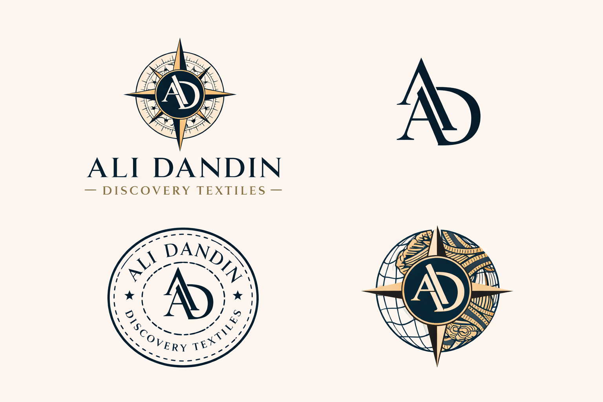
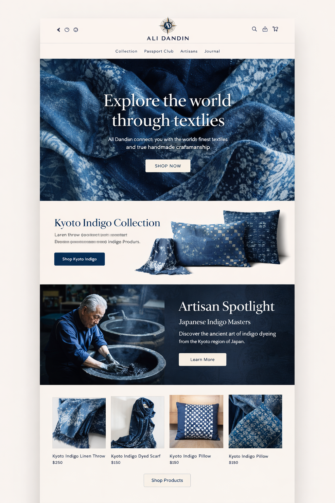

Consumers want objects with origin and taste, but most marketplaces flatten both into commodity product.
Textile-led global discovery brand
Ali Dandin premium textiles
Ali Dandin is a premium textile brand built around provenance, material intelligence, and destination-led collections.
The brand centers tightly curated textile drops, authority through craftsmanship and sourcing discipline, and a long-term path into signature collections, private label, and selective partnerships.
Brand pillars
- Destination-led collections rooted in craft, material, and place.
- Premium positioning shaped by provenance, restraint, and editorial taste.
- Long-term path from curated drops to signature textile lines.
4 core visuals
Logo suite, homepage concept, Kyoto Indigo board, and sourcing visual.
3 supporting docs
Plan, deck, and model support the business, financial, and fundraising narrative.
1 canonical direction
Textiles lead; travel and storytelling reinforce the brand.
Documents
Business plan, investor deck, and financial model.
| Document | Description |
|---|---|
| Business Plan | Business plan document. |
| Investor Deck | Investor presentation deck. |
| Financial Model | Financial model workbook. |
Shared
Summary
Ali Dandin defines a focused position in global textile commerce.
Ali Dandin operates as a textile-led discovery brand centered on provenance, material intelligence, and destination-led collections.
Destination-led textile collections paired with story, curation, and an editorial storefront.
Ali’s textile background supports sourcing judgment, supplier language, and product credibility.
Shared
Brand Identity
The visual and verbal frame is premium, traveled, and materially literate rather than trendy or souvenir-led.
The brand is the world’s textile discovery brand. The tone is calm, exacting, and editorial. Midnight blue, sand, and cream hold the system together, with terracotta or olive used sparingly. The headline voice is that of a curator with taste rather than a hype-forward DTC founder.

Compass-led wordmark for storefront, packaging, and brand headers.
Small-format mark for social avatars, tags, and future favicon use.
Useful collection stamp for destination pages, inserts, and drop graphics.
Symbolic brand emblem linking geography, material, and discovery.
Shared
Collection System
A single destination collection creates more coherence than a wide, mixed catalog.
Kyoto Indigo establishes the opening collection, combining material, dye process, and cultural origin into a cohesive product system. It establishes an immediate point of view: material, dye, craft, and origin all read clearly without requiring explanation-heavy merchandising.

- Indigo Linen Throw
- Indigo Scarf
- Indigo Pillow
- Indigo Textile Set
- Name by destination and material, not by generic ecommerce convention.
- Keep every product tied to process, place, and use.
- Let packaging reinforce origin and collector value.
Investor
Investment Case
Ali Dandin is positioned as a specialized authority in premium textiles.
Premium textiles provide a strong foundation for margin, repeatability, and expansion into private label.
Content creates trust, trust drives curated drops, drops generate proof, and proof deepens content.
Collections first, then membership, collaborations, selective licensing, and retail partnerships.
What makes the thesis defendable is not just travel content. It is the combination of curation taste, textile expertise, supplier fluency, and an ability to turn those into premium, place-led collections. The long-term value is not merely product margin. It is brand trust around material discovery.
Internal
Commerce Platform
The storefront language is editorial and premium rather than broad catalog commerce.
The homepage comp establishes the current storefront language: large textile imagery, one featured collection, one artisan story block, and a compact product grid.

- Homepage
- Kyoto Indigo collection page
- Four product detail pages
- Basic Passport Club capture
Internal
Sourcing Model
The sourcing model is strongest when authenticity, documentation, and small-batch discipline stay visible.
The sourcing logic in the material is consistent: discovery, documentation, sample orders, and repeatability only after demand becomes visible.

Premium linen and finishing credibility. Strong later-stage partner region.
Practical manufacturing depth for cotton, towels, throws, and scalable textile categories.
Rich process story: block printing, handloom, cotton, and craft-forward flexibility.
Hero region for indigo, heritage process, and the first premium collection story.
Future expansion region for alpaca, wool, and colder-climate luxury textiles.
Internal
Sourcing Network
- Italy: Albini Group, Canclini Tessile
- Turkey: Soktas Textile, Denizli textile network
- India: Arvind Mills, Anokhi workshops
- Peru: Michell Group
- Japan: Kuroki Mills, Kyoto heritage textile studios
- Documentation covers maker, process, region, and product category.
- Categories skew toward items that travel and fulfill cleanly.
- Sample orders and story capture sit close to the first collection logic.
- One lead collection per region is more visible than a mixed assortment approach.
Milan for context, Prato or mill districts for production, Florence for workshop and finishing references.
Istanbul for markets, Denizli for textile production, supplier conversations, and sampling.
Jaipur for block print and handloom, then larger mill context via Delhi or Ahmedabad.
Kyoto for indigo and heritage process, Osaka or Tokyo for supplier and logistics support.
Shared
Financials & Downloads
Business model summary plus the current plan, deck, and model files.
The economic story is straightforward: use story-led textile drops to establish proof, then expand into repeat collections, private label, and selective partnerships once audience trust and supply discipline are visible.
The materials outline the business model, financial structure, and growth strategy.
assets/docs/investor_business_plan.pdf
Business plan file covering the brand concept, market position, and commercial direction.
Download Business Planassets/docs/investor_deck.pptx
Presentation deck covering brand positioning, product direction, and growth narrative.
Download PPTXassets/docs/financial_model.xlsx
Financial workbook covering revenue, cost structure, and model assumptions.
Download XLSXCollections first, then membership, collaborations, private label, and eventually licensing.
Premium textile framing supports stronger pricing than generic travel-sourced goods.
Content → trust → drop → repeat purchase → broader authority.
Investor
Growth Roadmap
The brand scales from discovery into authority and into systems that support long-term growth.
Destination-led textile collections, strong editorial storytelling, and a narrow assortment define the opening phase.
Repeat collections, improve supplier discipline, and introduce selective private label development.
Bedding, throws, home textiles, licensing, and prestige retail define the broader lifestyle expansion layer.
A trusted discovery platform with product, media, and partnership leverage around textiles and culture.
The long-term upside is not just selling premium goods. It is owning a point of view consumers and partners trust when they want taste, provenance, and material literacy in one place.